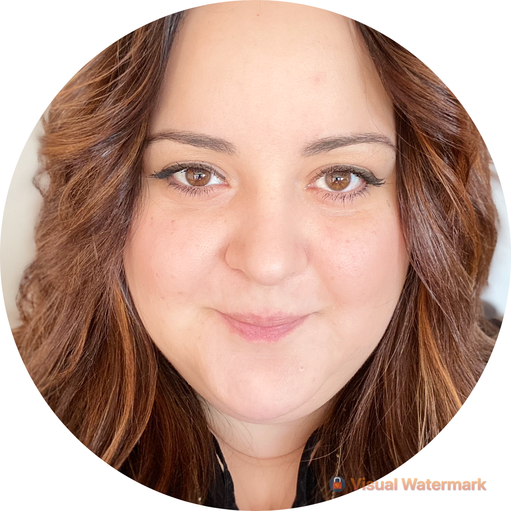

|  |
Annalisa MuccioliCurriculum Vitae |
Informazioni personali |
|
| Nome | Annalisa |
| Cognome | Muccioli |
| Indirizzo |
Via Bigelli, 14 47893, Borgo Maggiore Rep. di San Marino |
| Cellulare | +39 366 87 47 401 |
| annalisa.muccioli@gmail.com | |
| Nazionalità | Sammarinese |
| Data di nascita | 21/05/1985 |
Istruzione e formazione |
|
| Date | Dal 10/2005 al 04/2010 |
| Qualifica conseguita | Laurea in disegno industriale - votazione 110/110 e lode |
| Organizzazione erogatrice dell’istruzione e formazione |
Corso di laurea in Disegno Industriale Università degli Studi della Rep. di San Marino - Iuav di Venezia |
| Principali tematiche/competenze professionali possedute | Grafica, formazione di base nell’ambito delle discipline del progetto, conoscenza degli strumenti e tecniche relativi alla rappresentazione formale e funzionale del prodotto, delle tecniche di produzione di immagini digitali e dei moderni linguaggi visivi. |
| Livello nella classificazione nazionale e internazionale |
Laurea di Primo Livello - Classe 42 Classe delle lauree in disegno industriale - D.M. 509/1999 |
| Date | Dal 1999 al 2004 |
| Qualifica conseguita | Maturità scientifica - votazione 92/100 |
| Organizzazione erogatrice dell’istruzione e formazione |
Liceo scientifico Scuola Secondaria Superiore della Rep. di San Marino |
Esperienze lavorative |
|
| Date | Dal 01/2019 ad oggi |
| Tipo di impiego | Graphic Designer |
| Nome del datore di lavoro | S2Life S.r.l. |
| Indirizzo del datore di lavoro | Via Nicolino di Galasso, 30 - 47899, Serravalle, R.S.M. |
| Principali attività e responsabilità | Studio ed elaborazione di progetti grafici e di comunicazione per le aziende S2Life e Meglio in Salute, catena di negozi in franchasing sulla tematica del benessere. Web design e gestione e-commerce, grafica tradizionale, packaging design, e-mail marketing, copywriting, gestione pagina facebook e sponsorizzazioni, video editing. |
| Tipo di azienda e settore | Azienda che opera nel settore delle tecnologie per la salute e il benessere |
| Date | Dal 03/2011 al 08/2018 |
| Tipo di impiego | Graphic Designer |
| Nome del datore di lavoro | Expansion S.p.A. |
| Indirizzo del datore di lavoro | Via Marino Moretti 23 - 47899, Serravalle, R.S.M. |
| Principali attività e responsabilità | Studio ed elaborazione di progetti grafici riguardanti il campo della comunicazione a tutto tondo. Specializzazione nell’ambito del food packaging design. |
| Tipo di azienda e settore | Agenzia di marketing e comunicazione |
| Date | Dal 09/2010 al 03/2011 |
| Tipo di impiego |
Collaboratore alla didattica Laboratorio di tecniche della rappresentazione e modellistica - prof. A. Bosco |
| Nome del datore di lavoro | Università degli Studi della Rep. di San Marino |
| Indirizzo del datore di lavoro | Contrada Omerelli, 20 - 47890, San Marino Città, R.S.M. |
| Principali attività e responsabilità | Sostegno all’attività didattica in aula e all’organizzazione del corso, preparazione ed esposizione di un breve ciclo di lezioni. |
| Date | Dal 10/2007 al 12/2007 |
| Tipo di impiego |
Stagista grafico Stage formativo della durata di 300 ore |
| Nome del datore di lavoro | ma:design |
| Indirizzo del datore di lavoro | Viale della Vittoria, 88 - 61100, Pesaro, PU |
| Principali attività e responsabilità | Studio ed elaborazione di progetti grafici |
| Tipo di azienda e settore | Studio di progettazione grafica |
Capacità e competenze |
|
| CAPACITÀ E COMPETENZE TECNICHE |
|
| LINGUE STRANIERE |
Inglese (autovalutazione) Ascolto e Lettura: livello intermedio B2 Interazione, Produzione scritta e orale: livello intermedio B1 |
| CAPACITÀ E COMPETENZE PERSONALI | Dedizione al lavoro, buone capacità organizzative, relazionali, di lavoro in gruppo e di adattamento. Predisposizione a mettersi in discussione e ad apprendere le competenze tecniche necessarie per colmare eventuali lacune e/o necessità specifiche. |
| PERSONALITÀ | Sono una persona responsabile ed affidabile. Curiosa di natura e perseverante nel trovare soluzioni. Fortemente empatica. |
| ULTERIORI INFORMAZIONI | |
| Formazione specialistica | [ IN CORSO ] - Digital Marketing Specialist, Digital Coach |
| PATENTE | Automobilistica (patente B) |